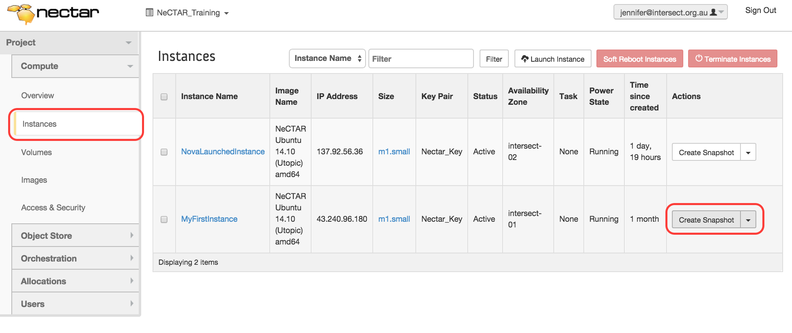
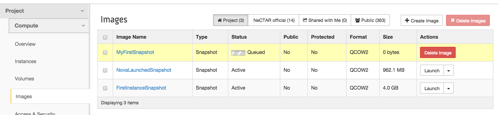
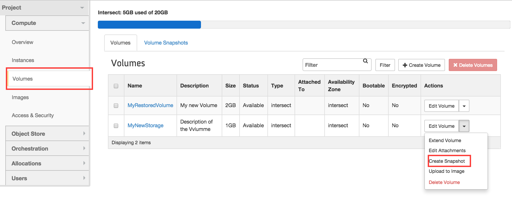
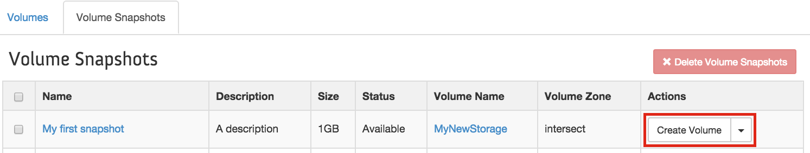

Module 9
Backing up and packing up
Introduction
In this module we will discuss how you can back up your instance and your data. You will learn how to make snapshots and how to recover your virtual machine using this snapshot. You will also learn how to terminate your virtual machine and release your storage without losing anything.
Is is important to be aware of the measures taken by NeCTAR to prevent data loss. But an important part of keeping your data safe is your responsibility: You should create backups at regular intervals. In this module, you will learn several approaches to backing up your data.
Another very important activity is “cleaning up” your resources after you have finished using them. This involves not only securely erasing data on your volumes or ephemeral storage. You should also “terminate” (delete) your instance and your storage as soon as you don’t need it any more. Why is this so important? Because your running instance and your existing storage take up resources which other researchers may need.

NeCTAR experiences resource shortages from time to time, which could be avoided if unused (idle) or underutilised (mostly idle) NeCTAR instances were terminated, freeing up resources. It has been observed that the average CPU utilization rate across the NeCTAR federation is less than 5%, and many large instances sit idle for days, weeks or months at a time.
The problem is that many people want their compute resources to be available when they are ready to use them. They don’t realise that while they are not using those resources, they are preventing others from accessing them. It is therefore important that everyone is aware of this and responsibly releases their resources when they don’t need them any more. Fair play!

The amount of CPU hours you request in an allocation is the amount of time your instance will be in existence — not the time the CPU is actually busy with your programs! That is, all time counts between when you launch the instance and terminate it — regardless whether the CPU is idle the whole time, or the instance is shut down or suspended. While you have access to the instance, it counts as CPU hours!
Consider this also when you plan on how to use your instance — you can back up the state of your instance and then “terminate” it while you don’t need it. It will be easy to restore it to the exact same state when you need it again.
It is not difficult to save your instance and volumes (“create a snapshot”), then terminate the instance and release the volumes, and re-launch your instance and volumes in exactly the same state at a later time, when you need it. In this module, we will show you how you can do this.
Videos
The following videos go through most of the content in this module and offer a less in-depth description of the subject than the documentation does.
https://www.youtube.com/watch?v=bcRt_NKZ79s
https://www.youtube.com/watch?v=9sYuHXA1rjg
https://www.youtube.com/watch?v=CuT4ddcghrM
Conventions
The notation throughout the training documents can be interpreted as follows:
Words in italics are used for names and terminology, e.g. name of a software, or name of a computing concept. It may also just emphasise a word in the traditional way. Quotations are also written in italics and are put in between quotatioin marks.
Words in bold are used to highlight words which identify important concepts of a paragraph, to make it easier for users to skim through the text to find a paragraph which explains a certain idea, concept or technology.
Additional information which is optional to read is displayed in info boxes like this one.
Important information is displayed in boxes like this one.

Definition of terms are displayed in boxes of this style.

Possibly specific prerequisites for reading a particular section are contained in this type of box at the beginning of a section.
The use of command line tools is part of this course. In a Terminal, you will be directed to type in commands. Commands are formatted as follows:
command-name argument1 argument2 ... argumentn
Throughout the exercises, when you see a word in pointed brackets, like <this-word>, it means that you have to replace everything inside the brackets, and including the brackets, with whatever is described within the brackets.
For example, if you are prompted to run a command named the-command which takes two arguments:
the-command -f <yourfile>
Then you have to replace the second argument, <yourfile>, with the file name that is being referenced in the exercise. For example
the-command -f thefile.txt
When editing a file, the contents of it will be displayed in a different font and with background colour as follows:
The content of the file The next line in this file
Output on the command line terminal is printed in boxes formatted as follows:
NectarInstance:~ Jennifer$ whoami Jennifer
Snapshots
You may copy the state of your instance, and later reboot it in this state. Copies of instances are called Snapshots. Snapshots of an instance can be used like other Images (e.g. like the Ubuntu Image we used in Module 7) to start new instances.
Snapshots only include data on your primary root disk. It is currently not possible to take Snapshots of the secondary ephemeral disk — the only way to save your data on the secondary ephemeral disk is to use other forms of backup, as discussed in the next section. But it is also possible to take Snapshots of Volumes.
In this section we are going to learn how to take Snapshots of instances and volumes. Then, we are going to re-create the state of the instances and volumes out of the snapshots.
Snapshots of an instance
Taking a Snapshot is simple: go to Dashboard > Compute > Instances and click “Create Snapshot” on the right hand side of the instance you wish to copy.

You may then choose a name for the Snapshot, and confirm with Create Snapshot. You will be redirected to the Images tab, which shows all your Images and Snapshots. In the list, you can see that your Snapshot is being created:

This process may take a while. While the Snapshot is being made, it will be listed with the Status “Queued”, then “Saving”, and finally it will be finished and in status “Active”. In the top row of the Images tab you can filter the Images to display. The current setting is “Project”: These are only your private Images. If you click on “NeCTAR official” you will see all the NeCTAR Images that are available to launch new instances. “Public” will show you even more Images you may use.
Instance Snapshots do not include the state of the secondary ephemeral disk, or of any volumes, even if they are currently mounted, e.g. on /data or /mnt.
On the same Images Tab, you may also delete your Snapshot at a later time. To delete a Snapshot, click on the right-hand side drop-down box of your Snapshot and select Delete Image.
It is possible to take a “Live Snapshot” (take a Snapshot of the machine that is currently running). In most cases, there should be no problem. However, if the instance is running while the Snapshot is being taken, the resulting Snapshot may be inconsistent. This is due to programs writing on the file system while a Snapshot is taken. There are a few options to prevent this inconsistency from happening:
- running “sync” before starting the Snapshot, or
- using a “file system freeze” utility which block programs writing on the filesystem,
- shutting down or pausing the instance before Snapshotting.
The easiest option is probably to pause or shut down the instance (which we will do later in this Module) and then take the Snapshot. For more information, refer to the OpenStack documentation.
Launch an instance from the Snapshot
It is easy to launch a new instance from a Snapshot. Simply go on the Dashboard > Compute > Images, select the Project filter on the top of the list, and you will get an overview of all your own Images. Find the Image you would like to launch a new instance from, and click Launch. The Launch window will come up, which is the same we already used in Module 7. The Snapshot Image will be pre-selected, and also the flavor of the Snapshotted instance. But you will still need to specify a few more settings:
- Choose an Instance Name,
- Keep or change the flavor (don’t pick a smaller though),
- Access & Security: Select key pair and security groups,
- Availability Zone (optional): Choose your Availability Zone,
- and possibly change other settings if you wish.
Snapshots of volumes
A Volume Snapshot creates a copy of the state of a Volume. It is similar to taking a Snapshot of an instance in that it creates an Image of which you can then create new Volumes. This is not necessarily the most ideal form of Backup, because each Snapshot takes up significant disk quota the same size of your Volume — even if the Volume still has lots of free space on it. For example, if you have a 50GB volume, but only use 1GB of data on it, then your Snapshot will still be 50GB. Also, you have limited quota available specifically for Snapshots. The next section will cover more suitable forms of backup for your data. However, you may still prefer to take a Snapshot of particular state of the volume, in order to easily create a new volume from it at a later time.
The original Volume on which the Snapshot was based must still exist, or the Snapshots of it become useless.
OpenStack does not let you delete Volumes which have “depending Snapshots”. So you have to be aware that the Snapshots are only usable while you keep your Volume in existence. This is different to Backups, which survive the deletion or a volume. Backups are are discussed in the next section.
Before taking a snapshot, you have to make sure your Volume is not attached to an instance — The volume has to be in the status “Available”.
To take a Snapshot of a Volume, go to Dashboard > Compute > Volumes and find the Volume you want to take a Snapshot of in the list. On the right-hand side, select Create Snapshot from the drop-down box.

A window will come up in which you type in a Snapshot name and a description. Confirm by clicking on Create Volume Snapshot. You will be redirected to the Volume Snapshots overview. You can get to this same page any time by via Dashboard > Compute > Volumes and then select the Tab Volume Snapshots.

To create a new Volume of a Snapshot, go to Dashboard > Compute > Volumes (or if you are still on the Volume Snapshots overview, simply select the Volumes Tab on top). This now works as we already have done in Module 7: Click on Create Volume. The Create Volume window will open.
Type in the name for the new Volume and a description. As Volume Source, select Snapshot. In Use snapshot as a source you may select the Snapshot you want to create the Volume from. As Size you should specify at least as much as the original Volume. (The size should be automatically pre-filled when you select your Snapshot. If you are unsure about the original size, you can also look it up on the Tab Volume Snapshots by clicking on the Snapshot name).

After clicking on Create Volume, your new Volume will be created and should appear in the list of your existing Volumes. You may now attach it to an instance and mount it from this instance to access the data, as we have done in Module 7.
You cannot delete a Volume while you have Snapshots of if saved. If you want to free up the Volume resource for other researchers, you have to delete all Snapshots too. So other forms of Backup will need to be used before you delete a Volume. The next section will discuss other forms of Backups.
Alternatively, you can use a technique similar to Snapshots: You can create an Image of the Volume, which you can then use to restore the Volume even after you have deleted it. This works in the same fashion as Snapshots, it only is a bit slower: Instead of Create Snaphot, now you select Upload to image. Name your Image accordingly so you can easily identify it. Your Volume Image will now appear along with all the instance Snapshots on Dahsboard > Compute > Images. When you create a new Volume, then as Volume Source, select Image, and select your Image as the Image as source.
Please be aware that “Upload to image” is not a suitable way to create regular backups, as it is slow and may take significant storage space on the Image Server. You should only use this for significant states of your Volumes, e.g. as a back-up just before you delete the Volume.
Backing up
Prerequisite: You should be familiar with all the storage terminology discussed in Module 6 and Module 7. You must know how to mount your secondary ephemeral drive on your instance, and how to attach and mount a Volume to your instance.
Some basic command line usage skills are helpful for this section as well.
The NeCTAR instances and volumes are not backed up automatically. Managing the backups is your responsibility. However some types of NeCTAR storage use RAID storage, which protects your data somewhat against data loss (roughly speaking, if one harddrive fails, your data can probably be reconstructed from other drives). Volume storage is backed by a variety of backend technologies across the NeCTAR Nodes. The Object Store is replicated across several physical locations, which is also a form of protection against data loss.
Generally speaking, NeCTAR does take measures against data loss, but the guideline is “all care taken, no guarantees given” — part of ensuring your data won’t be lost is your responsibility: Back it up!
It is recommended that you back up your important data at regular intervals. You may also feel more comfortable knowing that you have a copy of your data available off-line, maybe on your local office computer or a server at your research organisation. There are lots of tools available to backup data — in this section, we will discuss a few of them.
Of all the storage types, probably Object Storage is the most robust against data loss due to the physical distribution of multiple copies of each file. However you may still prefer to keep a copy of a recent state of your files on your local premises. Probably the easiest way to keep backups of your objects is to use clients like CyberDuck, CloudBerry or FTP clients like FileZilla to copy your files across manually. This has been described here in Module 7. A more advanced way to automate backups from the object store is to write scripts which use the openstack command line client to download several object files. This is going to be subject to discussion in Module 10.
For backing up the secondary ephemeral disk and Volume storage, there are a number of different tools which have different characteristics in type and form of backup they achieve. Both secondary ephemeral disk and Volumes have one thing in common: They are “mounted” at one folder on your instance. Therefore, to back up your data, you can use most methods for both of the storage types, with one exception: The OpenStack Volume backup tools only work for Volumes.
In the following, we will discuss a few options and tools to back up your data on the ephemeral disk and on Volumes.
Backups of Volumes using OpenStack tools
OpenStack offers tools to back up your Volumes (not your secondary ephemeral disk). They can be used from the Dashboard, or from the command line.
There are two ways to backup your data on the volume:
-
Volume Snapshot: This creates a copy of your entire volume, so if the volume is 5GB but you are only using 1GB of it, the Snapshot will still have a size of 5GB. The Snapshot is stored as an Image on the NeCTAR Image Server, so you will be able to select it when you create a new volume. A volume from which Snapshots have been created cannot be deleted while any of these Snapshots still exists — A Snapshot is dependent of the actual Volume. Creating Snapshots is fairly quick.
-
Volume Backup: Your data will be backed up and placed in your Object Storage. You can later restore that backup onto a new or existing volume. Only the amount of storage you are currently using is being backed up: If you only have 1GB of data on a 5GB volume, the backup will only be about 1GB. Backups are independent of the original volume, but they are still full copies of the Volumes. Therefore, they take longer to create than Snapshots.
The last section has discussed how to take a Snapshot of a Volume. Please be aware that Snapshots are not suitable to create regular backups, as it takes a lot of storage space and uses up your quota. Snapshots are also only usable while the original Volume still exists, which limits your flexibility to delete the volume. You should only use snapshots for significant states for your Volumes which you want to use to easily create new volumes from.
To make a Backup (not a Snapshot), you will need to use the openstack command line client, as described in Module 10. Support to create Backups via the Dashboard will probably be added in the near future — it will then work in a very similar fashion to taking Snapshots.
Note that when using Backups, you need to have enough quota on your Object Store to back up your data. You need to consider this when you request a resource allocation if you want to use OpenStack Backups — if you don’t request Object Store quota, you won’t be given any allocation for it.
Rsync command line utility
Rsync is a Unix command line tool which maintains a copy of a local directory on a (typically) remote system, in a traditional “mirror” fashion. The contents of the two folders, which we call source and destination folders are synchronized. The source and destination folders can be on the same computer, or they could be on separate computers that are accessible over a network or the Internet.
In the most typical backup scenario, the source would be the disk which is mounted on your NeCTAR instance, and the destination would be a server at your research organisation onto which the data will be backed up. The destination folder can also be on your local computer, though this is not a robust backup location, so it is recommended to use a dedicated backup server.
Rsync creates incremental backups, which means only what has changed in the directory since the last backup will be copied to the backup folder, so not every time a backup is performed all files have to be transferred again. This speeds up the backup process, especially with slow network connections.
Rsync can also compress and encrypt data streams during the backup process, which is important if the data being backed up has to travel through the internet to reach the server which maintains the backup copy.
RSync is a good choice for you if:
- you want to create a backup of the most recent state of your volume or secondary ephemeral drive
- and save the backup on your local computer, or another computer onto which you can log on to with a terminal (e.g. via a ssh terminal).
RSync is great in that it does incremental per-file copies, so it makes it easy for you to access (and even edit) your files offline, and keep the most recent state of your data synchronized between your computer and the NeCTAR storage.
The main drawbacks are:
- it is difficult to maintain backups of multiple time points — e.g. if you wanted to keep a backup of every week that you can restore individually later on. Rsync is more suitable to keep a backup of the most recent state.
- if something goes wrong while the rsync process in ongoing, the backup will contain a mix of old and new files, and the whole backup process should be repeated.
- It is a bit more complicated to set up automated backups (you can do this using cronjobs); The easiest is if you do the backups manually each time you want to back up your data.
Installation of Rsync
You will have to install rsync on your local computer (or on any computer you can logon to via a terminal, e.g. via ssh, and you want to use this computer for backups).
- On many Linux distributions, rsync is already installed. If it is not, you can install it using your package manager. For example on Ubuntu/Debian:
sudo apt-get install rsync - On Mac OS X, rsync is available by default.
- Under Windows, rsync can be installed as part of the cygwin package and used from the command line. This is a bit more complicated, so if you are using a Windows system, rsync is maybe not the right choice.
You also have to make sure rsync is installed on the NeCTAR instance on which the disk to be backed up is mounted — the image we used in Module 7 does already come with rsync on it.
Usage of Rsync
The rsync command copies files from the source directory to the destination directory, automatically using your ssh keys to encrypt the connection:
rsync -av <source directory> <destination directory>
Either the source or destination directory can be a remote directory on your NeCTAR instance. For example, it can be the folder which your Volume is mounted on, which we called /data in Module 7. Or it can be any other folder on your NeCTAR instance.
The other directory (source or destination) is then a directory on your local computer.
The syntax to specify a remote directory is <username>@<IP-Address>:<Path-to-Folder>
Depending on which direction you want to do the synchronization:
-
If you want to synchronize the /data folder from your instance onto your local computer, and save the copy in folder dataCopy:
rsync -av ubuntu@NNN.NNN.NNN.NNN:/data/ dataCopy/
This is what you do when you backup the data on your instance onto your local computer. -
If you want to synchronize a folder dataCopy from your local computer onto your instance, and save it there in the folder /data:
rsync -av dataCopy/ ubuntu@NNN.NNN.NNN.NNN:/data/
This is what you do to restore the data, or if you changed something in your dataCopy folder (e.g. edit a file) and want to apply the changes on your NeCTAR data copy as well.
Caveat: You have to make sure the source and destination directory specifications in the command end with a slash ”/” in order to get the expected synchronization behaviour (otherwise a new directory will be created in the destination directory instead).
The -a option in the command stands for “archive” — it synchronizes recursively (meaning it includes sub-directories) and preserves symbolic links, special and device files, modification times, group, owner, and permissions.
The -v option means “verbose” and prints out status messages while the command is working.
You may also be interested in using the option -z if you have large amounts of data to be backed up. This option compresses the data for transmission, which can speed up the backup process.
The amount of compression that can be achieved depends on the type of data being transferred, e.g. text files can be compressed efficiently, whereas binary files can’t be reduced much in size.
To use compression:
rsync -avz <source directory> <destination directory>
There are other tools related to or similar to rsync, for example rdiff-backup or rsnapshot which you may be interested in. For more information about rsync, please refer to the man pages:
man rsync
or visit the rsync website. There are also many tutorials for rsync which you can find online.
If your private key is not in the directory .ssh and you don’t have an ssh agent (or you are using Mac OS X which may not use .ssh as default), you will get a Permission denied error. Then, you need to specify the private key manually:
rsync -av -e '-i <path-to-private-key>' <source> <destination>
You have to specify the path to the private key in full, not using abbreviations such as ~.
Working example
Lets try this out. First, make sure your Volume is attached to your instance and mounted on any directory, say for example /data. Then go to your ssh terminal and create a file in your instances /data directory:
nano /data/testFile.txt
Write some text into the file, for example “This is my instance text file”, and close the editor with Ctrl+X.
Now, go to the terminal commanding your local computer and type (replacing N’s with your instances IP address):
rsync -av ubuntu@NNN.NNN.NNN.NNN:/data/ dataCopy/
List the contents of your current directory:
ls
and you will see that now there is a folder dataCopy. List the contents of it:
ls dataCopy/
and you should see that the file testFile.txt is there now. Open it, and add something new after the content you wrote in there before (e.g. “This is a line added on my local computer”):
nano dataCopy/testFile.txt
and exit the editor with Ctrl+X. You have just edited the copy of the file which you synchronized onto your local machine earlier! We want to apply the same changes on the file on the NeCTAR storage as well. So synchronize the two folders again, this time specifying your local directory dataCopy as source folder:
rsync -av dataCopy/ ubuntu@NNN.NNN.NNN.NNN:/data/
Now, you can switch back to your ssh terminal to your instance and check that the changes also have been applied there:
nano /data/testFile.txt
The text you added earlier should be visible here as well.
While you will only need to perform the first rsync command to create a backup, it is also nice to know that you can do it the other way round, in case you change something on your local copy of the data and then want to apply the changes on your instance as well. In case you need to restore your data, you will do the same thing.
Unix dd utility
Dd is a low level command line utility that you can use create an Image of a volume. It is essentially a low level byte-for-byte copy utility. Dd is installed by default on most Linux distributions (on Ubuntu/Debian as part of the coreutils package) and on Mac OS X.
Because dd is a lower-level backup tool, you need to have sudo privileges to perform a backup.
To back up a partition or a volume which is attached on /dev/vdc into an Image file called volumeBackup.dd, from the ssh terminal type:
sudo dd if=/dev/vdc of=./volumeBackup.dd
This process can take quite some time depending on the size of your volume.
After the command has finished successfully, type
ls
to reveal that now you have a file volumeBackup.dd in your current directory. You now can copy this image file to any place you consider “safe”, e.g. a server in your research organisation. You may use the instructions given here in Module 7 to download the backup file volumeBackup.dd from your NeCTAR instance.
When you want to restore a volume state you need to have the .dd image file on your NeCTAR instance again. To restore a volume/partition from the same file:
sudo dd if=./volumeBackup.dd of=/dev/vdc
When restoring the backup, the volume or partition needs to be the same size as the one you took the image from, so this limits your options in case of a restore.
The advantage of this method is that it is easy to use and it takes a 1:1 copy of your volume, preserving everything like file system, permissions, etc. The disadvantage is that backups are not incremental (like rsync) and each image file takes up the entire size of the volume — if your volume is 50GB, but you only use 1GB on it, the image file will still use 50GB. If you want to maintain several backups (e.g. snapshots of various stages of the volume state) and you have large volumes, dd is probably not the right choice.
BackupPC
BackupPC is a web-based system for managing backups of Unix, Linux, Windows and Mac OS X computers. It allows you to configure automated backup schedules and offers a web-based interface which you can use from any computer to configure your backups. It can transfer tar archives over ssh or nfs, or use rsync (amongst other options). The backups are stored incrementally on a backup server.
The big advantage is that once you have the backup server running, you get a graphical web interface to configure your backups, and you can create automated schedules for your backups, so you don’t have to regularly do this manually. You can still use BackupPC to run manual backups as well.
The disadvantage is that you need a dedicated backup server which runs BackupPC. This server may also be a virtual machine. Maybe your research organisation can provide you with access to a server on which you can install BackupPC.
Another drawback is that while you can use BackupPC to back up several instances, unfortunately it will back up the same folder on all of them, e.g. /data. So all your instances must have a /data folder (or any other that you specify), and it has to be mounted on the instance at the time the Backup happens.
Launching a separate instance on NeCTAR to handle the Backups of another NeCTAR instance is also possible. However, it contradicts the aim of having backups at a physically different locations — you would not even know if your Backup Volume is on the same hard drive as the Volume to be backed up. If that harddrive fails, or the whole data center burns down, all your backups are affected just as the original Volume. However you may only want additional copies of your data (at several stages of development), in which case BackupPC may still be an interesting option for you.
It takes a bit of work to set up BackupPC, because you have to set up the server, and configure the Apache Webserver on it accordingly. But it is not a complicated process. Refer to the official documentation or check out this tutorial on digitalocean or this page on archlinux for detailed instructions on how to set it up.
In this tutorial, only a quick HowTo is provided. On your backup server (ssh terminal to it):
-
sudo apt-get install backuppc
This will install BackupPC and its dependencies (including apache) and also create a Unix user backuppc which will be used to run BackupPC.
Follow the installation wizard in the terminal: Choose ‘OK’ (hit Tab if OK is not selected), select ‘Local only’, and set ‘System mail name’ to localhost; Confirm other messages with ‘OK’. The last message will display a generic password for the user backuppc, but you can set this separately later. -
You may want to change the password to something you may remember. Set password for the user and for the web access:
sudo passwd backuppc
sudo htpasswd /etc/backuppc/htpasswd backuppc -
Restart apache
sudo service apache2 restart - Generate a ssh key pair (with default name id_rsa, and no passphrase) for backup purposes only. Put the private key into the /var/lib/backuppc/.ssh directory, with the user backuppc being the owner of the key. Then, put the public key into the authorized_key file of all your instances you wish to back up. One way to do all this:
cd .ssh
ssh-keygen -t rsa
sudo mkdir /var/lib/backuppc/.ssh
sudo cp id_rsa /var/lib/backuppc/.ssh/
sudo chown -R backuppc.backuppc /var/lib/backuppc/.ssh/
sudo chmod -R 700 /var/lib/backuppc/.ssh/
Copy the public key onto any instance you want to back up. Because you are using a new set of ssh keys, the easiest is if you just copy the file onto your local computer, and then onto the target instance. From your local computers terminal:
scp <user-backup-srv>@<IP-backup-srv>:.ssh/id_rsa.pub Backup_Key.pub
scp Backup_Key.pub ubuntu@<IP-of-your-instance>:.ssh/
Logon to your NeCTAR instance (the one to be backed up) via ssh. In the ssh terminal, copy the public key into authorized_keys:
cat .ssh/Backup_Key.pub >> .ssh/authorized_keys
Switch back to your backup server ssh terminal, and test if you can connect to your ubuntu instance:
su - backuppc
ssh ubuntu@<IP-of-your-instance>
You should now be logged on to your NeCTAR instance. Log out again
logout
and exit the backuppc logon shell:
exit -
Your BackupPC web interface will now be available on your web browser at the URL
<IP-of-Backupserver>/backuppc
The user name is backuppc and the password the one you specified with the htpasswd command earlier (Note: Use Firefox! There may be problems with the Chrome browser). - Please refer to the online documentation mentioned earlier for further steps to set up your backups — only one thing to be noted here: In the Xfer Tab of the main configuration editor, you have to replace root by ubuntu in the following fields: RsyncClientCmd, RsyncClientRestoreCmd. This is because we use the user ubuntu instead of root to log on to the instance. The XferMethod should be rsync, unless you specifically choose to use another option. Set the RsyncShareName to /data (or to the folder you mounted your volume or ephemeral drive to). Click “Save” to confirm.
Other tools for Volume backups
There are a large number of tools for backup and restore which you may want to look into if the tools described in this section do not meet your requirements.
Examples include:
-
You may use a secure copy (scp) command or a secure FTP client to copy your data manually to your local machine. This has been described here in Module 7. Before you do this, you should create a zip or tar archive of all your files, so you only need to copy across one file:
tar -czf <NameOfArchive>.tgz <list of your files or folders> -
The dump and restore command line utilities provide you the ability to backup and recover your data. They support full and incremental modes. Backups can be saved as a file, or directly uploaded to a server that supports the remote tape protocol (rmt). It is possible to restore an entire file system, or restore in “interactive” mode and manually select individual files to restore. Detailed instructions are out of scope of this tutorial.
-
Duplicity is a simple command line utility which supports encrypted and compressed, full or incremental backup of a directory tree. The attractive thing about Duplicity is that the backups can be made to many types of storage, including scp, sftp, ftp, rsync, Amazon S3, Google Cloud Storage, Dropbox, OpenStack Object Storage, and more. For more information, refer to the duplicity man pages.
-
CloneZilla is a free partition and disk imaging/cloning program, similar to the commercial Ghost.
-
This archlinux wiki provides a good overview of many other Backup tools.
Cleaning up
Prerequisite: You should be familiar with all the storage terminology discussed in Module 6 and Module 7. You must know how to mount your secondary ephemeral drive on your instance, and how to attach and mount a Volume to your instance.
Some basic command line usage skills are helpful for this section as well.
It is important that you take responsibility and have your instance and volume storage up and running only when you really need it, or your resources will sit idle, and you will be using up your CPU hours and block the resources to other researchers.
In the last sections you have learned how you can take Snapshots of your instances and easily re-launch them when you need them again; you can also take an Image of your Volumes and create backups to re-create the state of your Volume at a later time. Once you have your instance and data backed up, you are free to terminate your resources and free them up for others.
Before you free up the resources, you should make sure that you securely erase all the data on your volumes, to make sure nobody will be able to restore the data on the section of the hard-drive you were using. This section will show how you can securely erase data, and then terminate your instances and volumes so that the resources are freed up for other researchers.
Securely erasing data
Just removing all files from your secondary ephemeral drive or your Volumes won’t do the job — this just removes the index of the files (think of it like a table of contents), but the actual bits of the files will still be on the harddrive, so it is possible to restore them when using special tools. To securely erase the data, you have to overwrite the bits with other (random) bits. You even have to repeat the overwriting several times to be sure nothing can be recovered. Some people even argue the only way to really, really ensure the data is erased is to burn up the hard drive — an option we don’t have in this case, so we will have to be satisfied with overwriting the data several times.
If you are really concerned that overwriting your data several times may still not be enough, then encrypt your volume, as described here in Module 8, and then securely erase it afterwards. Even if someone was able to restore the data, it would be the encrypted data — and they would still need your key!
Before you start erasing data, make sure that you unmount the drive from your instance!
You will need your device file name (e.g. /dev/vdc). To find it, you may for example use
sudo lsblk -l and/or
sudo lsblk -f
to print information about your drives. You can also see it on the Volumes overview in the Dashboard.
The following will assume your drive is located at /dev/vdc. If your is at another path, you will have to replace this in the following commands.
Using dd
Using the dd Unix command line utility, wiping your disk is easy. Say your device location is your volume /dev/vdc, or your secondary ephemeral storage /dev/vdb, you can securely erase it with the dd command (we already encountered dd in the last section):
sudo dd if=/dev/urandom of=<device file> bs=4K
Warning: This command will start erasing all data as soon as you start running it, with no further confirmation. Check that the correct drive or partition has been targeted: the of=… option has to point to your volume or ephemeral disk you want to erase. It should not point to a system disk!
The option bs means block size, which is the number of bytes that are written at one time. The command is faster if you choose the block size used by your physical harddrive — in case of doubt, just use 4K. You may specify the size in bytes, or in kilobytes by appending k, or in Megabytes by appending M.
To find out the block size of /dev/vdc:
sudo dumpe2fs /dev/vdc | grep 'Block size'
The process may take quite a while. It is finished when dd reports the error “No space left on device” (this is technically an error because dd tries to write beyond the end of the disk, which it cannot.
$ sudo dd if=/dev/urandom of=/dev/vdc bs=4K iflag=nocache oflag=direct dd: error writing ‘/dev/vdc’: No space left on device 262145+0 records in 262144+0 records out 1073741824 bytes (1.1 GB) copied, 293.366 s, 3.7 MB/s
Now if you wanted to be even more sure your data is erased, you repeat this process several times.
After you have erased your disk, everything will be wiped — also the file system. If you wanted to re-use the volume, you have to format it again, as described in Module 7.
To speed up the process, you may also overwrite the data with only zeros instead of random data (it is faster because the random generator can be switched off). This is a little less secure: while this will render any data irrecoverable by software, it still may be recoverable by special laboratory techniques. However for this, somebody would need to break into the NeCTAR data center, identify the section of the hard drive you have been using, and undergo significant efforts to restore your data, with no guaranteed outcome — unlikely! So let’s speed up the process:
sudo dd if=/dev/uzero of=<device file> bs=4K iflag=nocache oflag=direct
Options iflag and oflag will try to disable buffering, which does not make sense in this case of a constant stream of zeros. The options should speed up the process.
Using shred
The shred command line utility also provides a means to securely erase data. It is installed by default on most Linux distributions (e.g. on Debian/Ubuntu as part of the coreutils package). It is argued that shred is not as secure as the above dd command — shred securely deletes data, but in theory it can be recovered, albeit only with great difficulty using specialised hardware, if at all.
To run shred with its default settings (overwrite with random data in 3 passes) to erase your device mapped on device file (e.g. /dev/vdc):
sudo shred -v <device file>
The option -v means “verbose”, it will print information while the process is ongoing. For overwriting with zeros instead of random data (which is faster but less secure), add the option -z.
Shred also allows specification of a particular file instead of <device file>, but this is not secure on journaling file systems (which most modern Linux file systems are)! Be sure to choose your device mapping file.
Shred by default uses three passes (overwriting your data three times), writing pseudo-random data. Alternatively, shred can be instructed to do X number of passes with the same random source as used in the dd command described earlier:
sudo shred -v --random-source=/dev/urandom -n<X> <device file>
For example, say you want to erase your drive attached to /dev/vdc, use 5 passes and random data:
sudo shred -v --random-source=/dev/urandom -n5 /dev/vdc
After you have erased your disk, everything will be wiped — also the file system. If you wanted to re-use the volume, you have to format it again, as described in Module 7.
For more details on the shred utility, refer to the man pages:
man shred
Terminating an instances and Volumes
Deleting your instance or volume and thereby freeing up resources for others is also called terminating your instance or volume. This can be done easily in the Dashboard.
To terminate an instance, first make sure you have securely erased the data on the secondary ephemeral disk which you may have used (probably on /dev/vdb). Then, go to Dashboard > Compute > Instances and find the instance you want to terminate in the list. In the right-hand side drop-box next to the instance, select Terminate instance.
You must detach any Volumes from your instance before terminating it — There may be problems if you terminate an Instance while it has Volumes attached. Recovering your volume requires the NeCTAR technical staff to manually patch a database.
To delete a Volume, after you have securely erased your data, go to Dashboard > Compute > Volumes and find the volume you want to delete in the list. In the right-hand side drop-down menu, select Delete Volume.
Summary
Good on ya!!!
You have now learned how to back up your instances and your data and release it securely for other researchers. You have also learned how to recover your resources after you have terminated or deleted them, without having lost anything.
In summary, this module has covered:
- An introduction on why it is important to terminate/delete resources
- Creating snapshots of a VM and of Volumes.
- Launching a VM from a snapshot
- Creating Images from a volume
- Tools to use for backing up volumes
- Difference between Backup and Snapshot
- Backups using OpenStack
- Backups using RSync
- Creating an image of a volume using dd
- Using BackupPC to install a backup server
- Overview of other backup tools
- Cleaning up:
- Securely erasing data with dd or shred
- Terminating instances and volumes via the Dashboard
Modules 1-9 have covered all you need to know to get started with the Research Cloud using the Dashboard and other tools.
You are now ready to apply your knowledge about the Research Cloud to your research!
If you like using the command line to get things done, you will love the extra information given in the last Module, which will show you how you can get everything we have learned so far done using command line only.
We hope you have enjoyed this course. Don’t hesitate to contact NeCTAR support if you have any further questions on how to set up and use the NeCTAR services.
If you are interested in learning about the command line tools, continue now with Module 10.